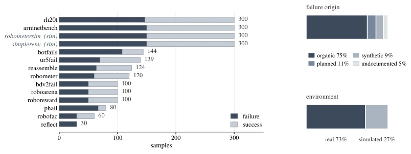
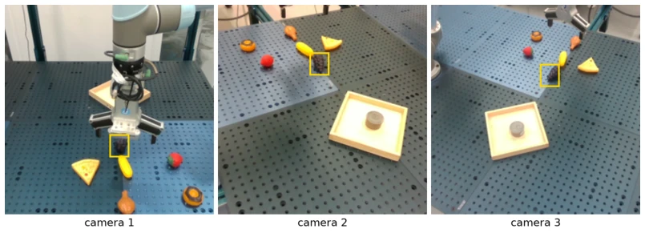

Currently, using VLMs as judges has become a trend, but this paper casts a sobering reality check. FailBench tests with 2000+ real samples, finding the strongest model's accuracy is only 77%, equivalent to one error per four judgments. Specialized fine-tuned 'expert' models perform worse than general large models, which is highly ironic. Although a local cropping trick is proposed to boost scores, this only treats the symptoms, not the root cause; the core remains that models do not understand physical contact. This work is like guiding a blind person: the road signs are drawn quite clearly, but the blind person is still prone to falling into pitfalls.
研究动机Motivation
机器人学习依赖 VLM 判断成败来生成奖励或过滤数据（Lu et al., 2025b; Liu et al., 2023）。但现有基准如 Guardian、RoboFAC 多基于单一来源或人工构造失败（Pacaud et al., 2025; Lu et al., 2025b），缺乏跨域泛化证据。自然发生的失败（如未接触）比人工扰动更难检测。现有工作未系统评估 VLM 在真实复杂场景下的可靠性，导致训练数据污染或评估偏差。RH20T 等数据集虽含真实失败，但未被用于基准测试（Fang et al., 2024）。
Robot learning relies on VLMs to judge success or failure to generate rewards or filter data (Lu et al., 2025b; Liu et al., 2023). However, existing benchmarks such as Guardian and RoboFAC are mostly based on single sources or artificially constructed failures (Pacaud et al., 2025; Lu et al., 2025b), lacking evidence of cross-domain generalization. Naturally occurring failures (e.g., non-contact) are harder to detect than artificial perturbations. Existing work has not systematically evaluated VLM reliability in real-world complex scenarios, leading to training data contamination or evaluation bias. Although datasets like RH20T contain real failures, they have not been utilized for benchmarking (Fang et al., 2024).
Construct the FailBench benchmark, screening 14 public datasets from 30 candidate libraries, containing 12 real-world and 2 simulation environments, totaling 2197 attempts. Samples are categorized into three types by failure source: Organic (naturally occurring, 75%), Planned (intentional, 11%), and Synthetic (post-editing, 9%), ensuring labels are assigned by original providers. Evaluate 13 VLM detectors, divided into three categories: general large models, embodied training models, and specialized failure detection models, using official prompts and settings. Propose an Evidence Localization Pipeline containing two stages: first, use a localization model to locate result-relevant areas based on instructions and four-frame video (without leaking labels), then crop input to the detector. This avoids the model being interfered by irrelevant backgrounds, focusing on key visual evidence. All experiments use the balanced accuracy metric, ensuring class imbalance does not affect evaluation. For video input, some models receive video directly, while others use 32-frame uniform sampling.

Figure 1: FailBench structure. Three quarters of the benchmark are organic failures. Table 6 gives what each source had available before sampling.
The dataset contains 2197 attempts, with 75% natural failures. The metric is balanced accuracy. Gemini 3 Flash is optimal (0.77), followed by Gemma-4-31B-it. Specialized models such as Guardian and RoboReward are generally inferior to general models. Contact-intensive tasks (e.g., reassemble) perform close to random (<0.60). Cropped input improves the strongest model by 2.3 percentage points, but cannot solve contact-related difficulties. Error overlap between models is low (IoU 0.28), and ensemble benefits are limited. Simulation environments mask performance gaps, while real environment performance is more dispersed (variance 0.0135 vs 0.0089).

Figure 3: A viewpoint failure on ur5fail put_food_in_box. The jaws never closed. Yellow boxes mark the grapes: from camera 1 they read as held, from cameras 2 and 3 they are still on the table. All three views go to the model, which answered success.